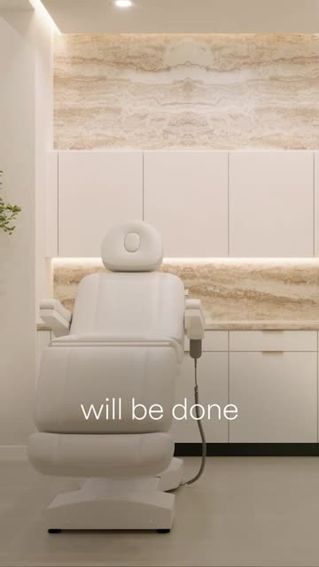

Editor libraryEvery breakdown picks one of our strongest videos and shows exactly how it was built, shot by shot, so every editor on the team can hit the same standard.

A raw construction site becomes a finished Beverly Hills clinic, one room at a time. The standard for every tour we edit: stable, angled, no digital zooms, and a render for every room.
Open the breakdown